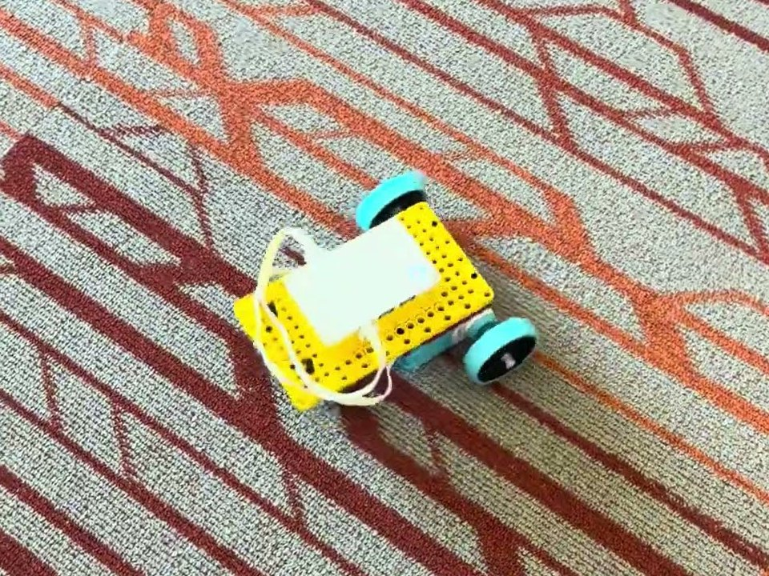

For this project I used LEGO SPIKE Prime to build a simple car. The challenge was to make it sturdy while using as few pieces as possible, thinking like an engineer (which connections are structurally sound?) and like an economist (how can the design be simplified to use fewer parts?).
The car had to drive forward and backward at both slow and fast speeds, spin clockwise and counter-clockwise, and drive in both a small arc and a big arc.
My car is built around the hub, which sits on top of a yellow frame, with a motor and a teal wheel on each side. The car has no steering, so every move comes from how the two wheel motors are run. Both wheels turning forward or both turning backward drives it straight, turning them in opposite directions spins it in place, and running them in the same direction at different speeds curves it into an arc. The bigger the difference between the two speeds, the tighter the arc. The video below shows the car driving.